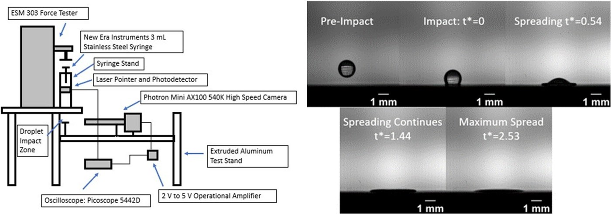
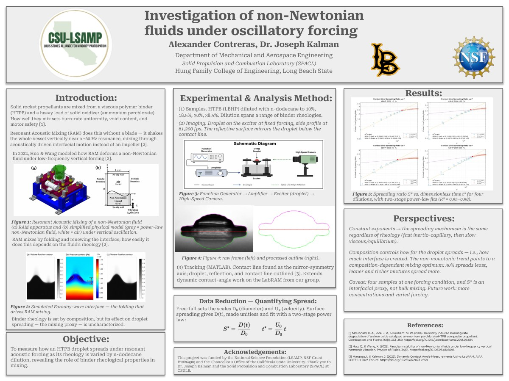
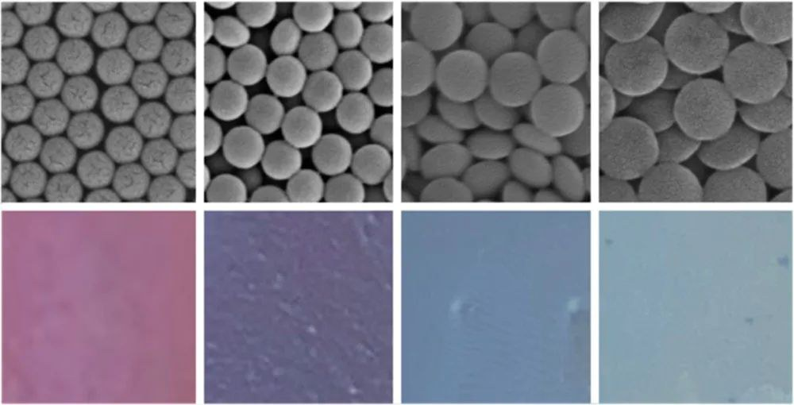
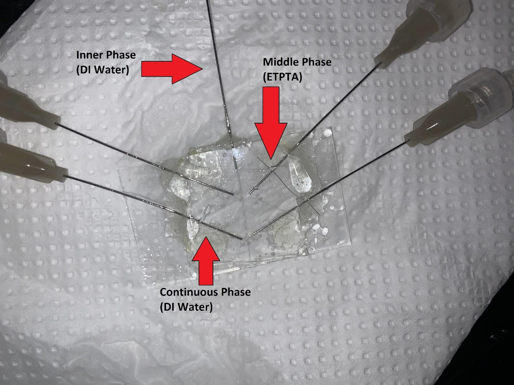
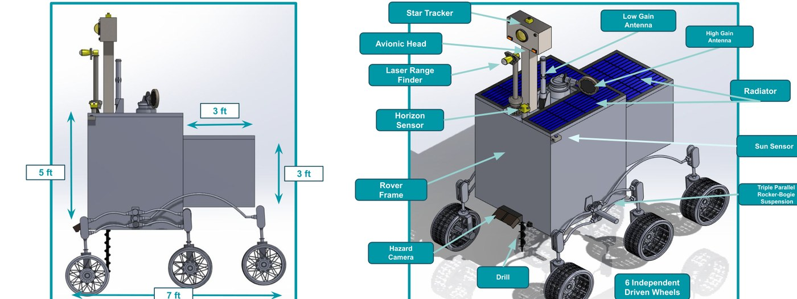
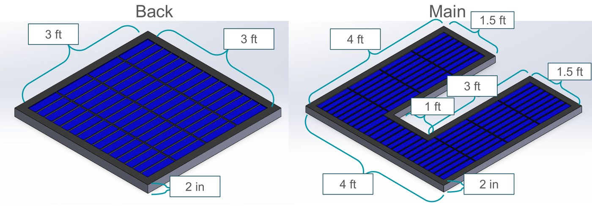
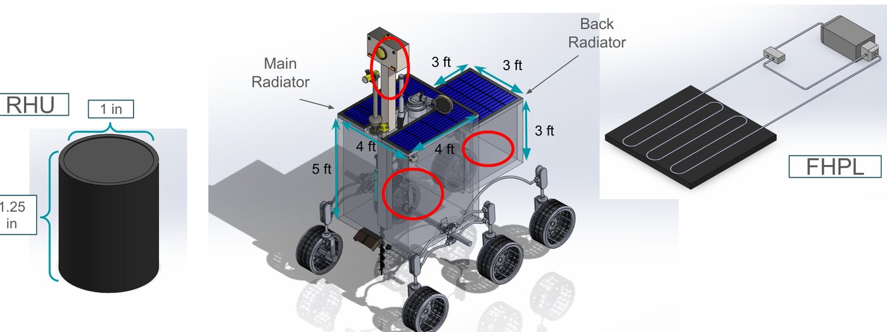
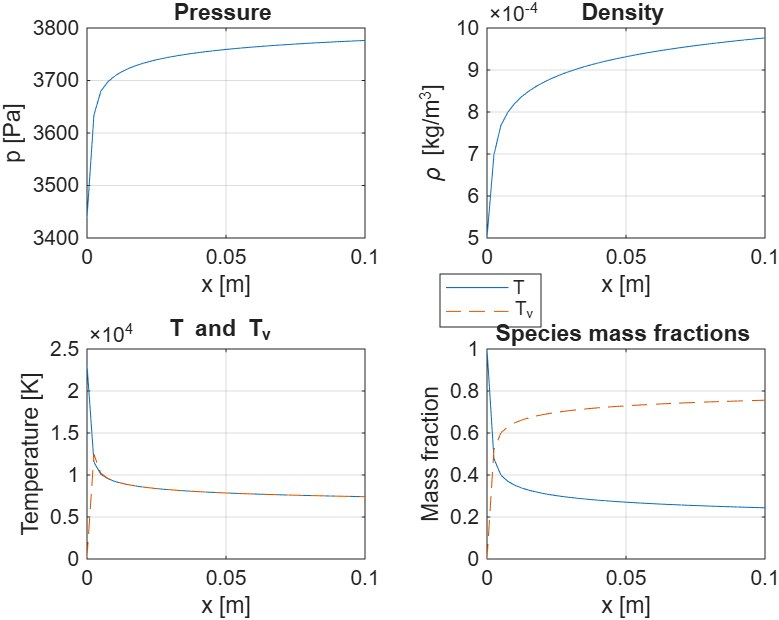
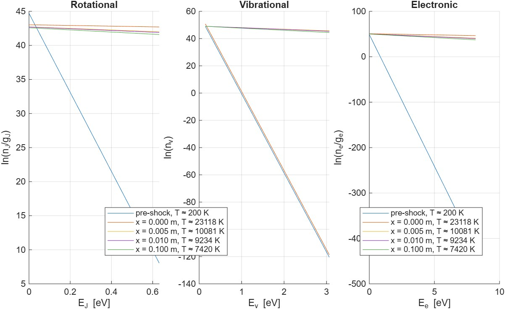

EXPERIENCE
Research, hands-on projects, and peer-reviewed work — jump to a section:
Experimental and computational research in combustion, soft matter, and high-temperature flows.
I study nonequilibrium post-shock flows, which means running the same analysis across dozens of conditions. I'm building the workflow that runs those cases and keeps the results consistent, so differences between cases reflect the physics and not run-to-run noise.
What I built

I joined Dr. Kalman's Space & Combustion Lab in my first year as an NSF CSU-LSAMP undergraduate researcher, studying how non-Newtonian binder fluids spread under oscillatory forcing. Over three years, that first-year mini-project grew into the co-authored paper above — how polybutadiene binders wet ammonium perchlorate, the physics behind 3D-printing solid rocket propellant. I ran the experiments and built the MATLAB pipeline behind its data.
Early project 2022 Week of RSCA — where it started
Before the paper, this was my first-year LSAMP research project — non-Newtonian binder fluids under oscillatory forcing — which I presented at the 2022 Week of RSCA. It's the foundation the publication grew from.


Structural color is color made by geometry instead of pigment — pack tiny particles at just the right spacing and they reflect a specific wavelength. My summer project was learning to control that spacing by tuning the volume fraction of colloidal droplets.
What I did

Hands-on engineering — the actual designs, models, and results.



Our rover had to operate inside a permanently-shadowed lunar crater — no sunlight for warmth, surface temperatures from −205 °C to 100 °C, and avionics that had to stay inside a survivable band for the whole mission. I led the thermal design that kept them there, and managed the 7-person team through all four design reviews.
How I approached it

Behind a strong shock — a hypersonic forebody, or the high-enthalpy flow in a nozzle — gas heats so fast that its energy modes fall out of step: the molecules are translating hot before their vibrational energy catches up. A single-temperature model can't see that gap. I built a 1-D nitrogen model that tracks two temperatures separately so it can.
How it works

Peer-reviewed research output.
Ammonium perchlorate composite propellants power most missiles and launch vehicles. This paper studies how to 3D-print them better: how polybutadiene binder structure governs the dynamic wetting of droplets impacting ammonium perchlorate, the key unknown for binder-jetting additive manufacturing of propellants. Spreading scales with t1/2 right after impact (inertia-dominated) before a viscous regime; the branched polymer spread up to 25% more by area than the linear one.
My contribution — the image-processing pipeline
I built the MATLAB pipeline that turned 15,000 fps high-speed video into the quantitative data behind the paper's findings — thousands of sub-millimeter frames per test, impossible to measure by hand.